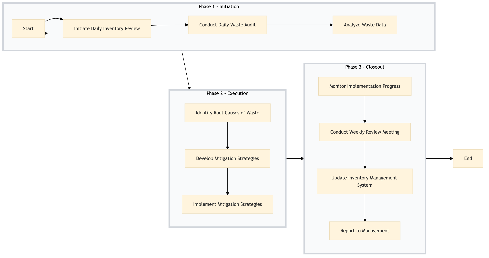

| Role | Steps |
|---|---|
| Executive Chef | 1.1 1.3 2.1 2.2 2.3 3.1 3.2 3.4 |
| Sous Chef | 1.2 3.1 |
| Kitchen Staff | 2.3 3.2 3.3 |
| Step | Name | Role | System | Input | Output | KPI | Dec? | Exc? | Pain Point / Risk |
|---|---|---|---|---|---|---|---|---|---|
| 1.1 | Initiate Daily Inventory Review | Executive Chef | Oracle OPERA Cloud | Current inventory list | Updated inventory report | < 30 min | N | Y | Accurate tracking of perishable items |
| 1.2 | Conduct Daily Waste Audit | Sous Chef | Oracle OPERA Cloud | Daily food waste data | Waste audit report | < 45 min | N | Y | Recording all types of waste accurately |
| 1.3 | Analyze Waste Data | Executive Chef | Microsoft Power BI | Waste audit report | Trend analysis dashboard | < 60 min | N | Y | Interpreting complex data for actionable insights |
| 2.1 | Identify Root Causes of Waste | Executive Chef | Oracle OPERA Cloud | Trend analysis dashboard | Root cause analysis report | < 90 min | Y | N | Determining underlying issues in food preparation |
| 2.2 | Develop Mitigation Strategies | Executive Chef | Oracle OPERA Cloud | Root cause analysis report | Mitigation plan | < 120 min | Y | N | Creating effective strategies to reduce waste |
| 2.3 | Implement Mitigation Strategies | Executive Chef and Kitchen Staff | Oracle OPERA Cloud | Mitigation plan | Updated kitchen procedures | < 150 min | Y | N | Executing changes in a busy kitchen environment |
| 3.1 | Monitor Implementation Progress | Executive Chef and Sous Chef | Oracle OPERA Cloud | Updated kitchen procedures | Progress report | < 20 min | Y | N | Tracking the effectiveness of new strategies |
| 3.2 | Conduct Weekly Review Meeting | Executive Chef and Kitchen Staff | Oracle OPERA Cloud | Progress report | Action plan for ongoing improvements | < 60 min | Y | N | Collaborating effectively to address remaining issues |
| 3.3 | Update Inventory Management System | Executive Chef and Kitchen Staff | Oracle OPERA Cloud | Action plan for ongoing improvements | Updated inventory management system | < 90 min | Y | N | Ensuring all systems are aligned with new strategies |
| 3.4 | Report to Management | Executive Chef | Oracle OPERA Cloud | Updated inventory management system | Management report | < 120 min | Y | N | Communicating progress and results to upper management |
A structured process document for tracking and reducing food wastage at a Marriott full-service hotel using Oracle OPERA Cloud PMS and other relevant systems.